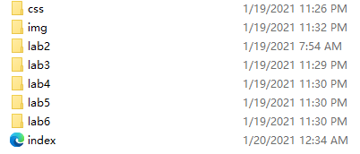
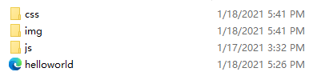
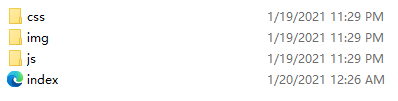

The subject is help us to understand file structure about webs and how to edit thoes by Atom.
it's easy to creat these files and folders in our computer, but We don't know why we need to use the name index.html instead of others.
Here are the files and folders we've created.
Files and Folders inside Folder art101
Files and Folders inside Folder art101/lab2
Files and Folders inside Folders art101/lab3-art101/lab6